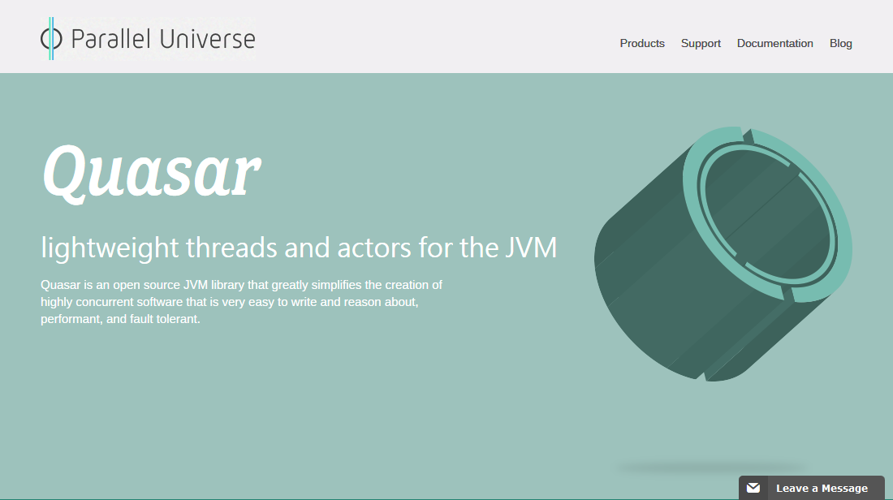
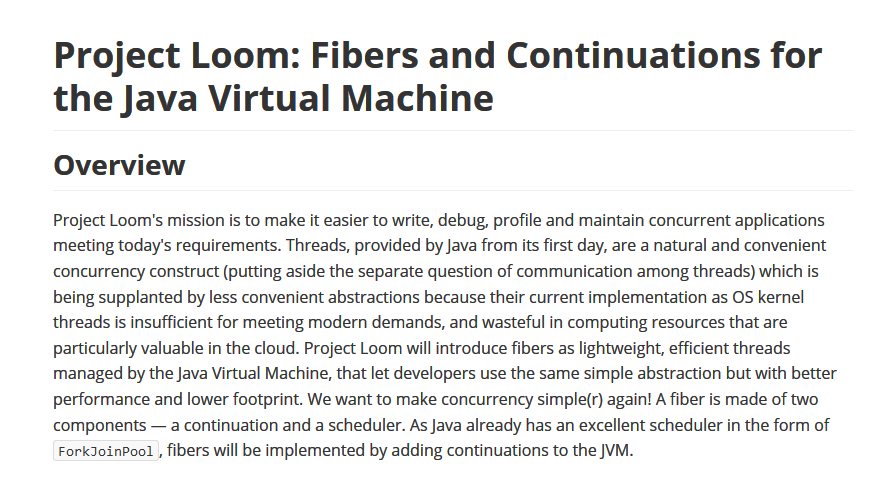

今天就能帶回家的 Java Coroutine！
黃俊鈞
前言
- 架構設計有賺有賠，導入前請詳閱公開說明文件
- 設計其實是在諸多選擇中的 trade off
- 沒有最好，只有...
- 大家考慮清楚、討論充足後，願意一同承擔風險的方案
今天的主講人
黃俊鈞
一名程式員
現任職於資策會
今天的主角
Quasar
Quasar is a library that provides high-performance lightweight threads, Go-like channels, Erlang-like actors, and other asynchronous programming tools for Java and Kotlin.
Quasar
Quasar 是個提供了高效、輕量執行緒的函式庫，它有如同 Go 語言的 channels、Erlang 語言的 actors，還有其他供 Java 與 Kotlin 開發使用的非同步工具
今天的脈絡
- 問題 → 需求
- 需求 → 機制
- 機制 → 實踐
- 實踐 → 驗證
- 深入探討
問題 → 需求
不知道，各位有沒有碰過這樣的問題？
假設我們有個這樣的計算問題
在 1 <= n <=45 的費氏數列裡，
有多少個數字是質數呢？
- 為了表示耗時操作，本例皆用最慢演算法
- 各位都是專業的工程師，請勿模仿本例寫法
費氏數列
long fib(long n){
if(n == 0 || n == 1){
return n;
}else{
return fib(n - 1) + fib(n - 2);
}
}
質數判定
boolean isPrime(long value) {
if (value <= 1) {
return false;
} else {
for (long div = value - 1; div > 0; div--) {
if ((value % div) == 0) { return div == 1; }
}
return false;
}
}
同步執行
圖片來源：Cama
或可以說是...
圖片來源：輕旅行@yam.com
同步執行的程式
List<Long> checkPrimalityFib(long n){
List<Long> numbers = new ArrayList<>();
for(long i = 1; i <= n; i++){
long fibNum = fib(i);
if (isPrime(fibNum)){ numbers.add(i); }
}
return numbers;
}
但好景不常....
為了某些理由，我們把核心的計算工作
與流程控制分開了，中間透過 Message Queue
介接，於是它們變成...
非同步執行
圖片來源：PCHome
非同步環境下的同步執行
List<Long> checkPrimalityFib(long n){
List<Long> numbers = new ArrayList<>();
for(long i = 1; i <= n; i++){
long fibNum = CALL_MQ_AND_WAIT(fib(i));
if (CALL_MQ_AND_WAIT(isPrime(fibNum))){ numbers.add(i); }
}
return numbers;
}
非同步的 Event Driven
讓我們來看一下程式....程式脈絡已經與先前完全不同！
困難的，不是把它寫出來，而是寫完後要如何維護與擴充！
需求
- 呼叫 Message Queue 的時候，程式可以暫停，而非等待
- Message Queue 傳回執行結果後，程式可以恢復原本執行時的狀態
- 程式碼可以維持清晰易讀的條理
需求 → 機制
Coroutine & Continuation
Coroutine?
Coroutines are computer-program components that generalize
subroutines for non-preemptive multitasking, by allowing multiple
entry points for suspending and resuming execution at certain
locations.
Wikipedia.
一句一句地說明
- generalize subroutines for non-preemptive multitasking
泛指用作非佔式多工的副程式 (執行單元) - by allowing multiple entry points
藉著賦予這副程式可以有多個進入點 - for suspending and resuming execution at certain locations
使得控制流得以在特定位置暫停或復原
Continuation
a continuation is an abstract representation of the
control state of a computer program. A continuation reifies the
program control state, ... Continuations are useful for encoding
other control mechanisms in programming languages such as exceptions,
generators, coroutines, and so on.
Wikipedia.
一句一句地說明
- an abstract representation of the control state of a computer
program
一種程式的(流程)控制狀態的抽象化表示方式 - A continuation reifies the program control state
換言之，一個 continuation 表示了一段程式的控制狀態
- Continuations are useful for encoding other control mechanisms in programming
languages
Continuation 在程式語言裡有助於使用額外的(流程)控制機制
在 Java 有嗎？
try{
...
}catch(Exception ex){
...
}
優點
- 可以在同步式開發的程式裡，具備非同步的執行特性
- 輕量化的 Thread - Fiber，可以建立大量的執行單元
- 適用於非佔用 CPU 型的任務，如 IO、網路通訊等
缺點
- 引入了外部(Java Agent)工具，增加部署上的負擔
- 為了保持邏輯正確性，需要把 Fiber 暫停前的資料暫存起來
- 框架間相容性需要更深入研究
- 框架都很冷門，甚至有的已經沒有在維護
- JDK 原生 Coroutine - Loom 仍在研議中
機制 → 實踐
Quasar 101
Fiber & Channel
圖片來源：知乎
PrimalityFiber
Gradle
configurations {
quasar
}
dependencies {
compile "co.paralleluniverse:quasar-core:0.7.10:jdk8"
quasar "co.paralleluniverse:quasar-core:0.7.10:jdk8@jar"
}
test {
jvmArgs "-javaagent:${configurations.quasar.singleFile}"
}
小眉角
task copyQuasar(type: Copy) {
into "$projectDir/lib"
from configurations.quasar
}
build.finalizedBy(copyQuasar)
Fiber
public class PrimalityFiber
implements SuspendableCallable<List<Long>> {
@Override
public List<Long> run() throws
SuspendExecution, InterruptedException {
...
}
}
與 Channel 共舞
List<Long> result = new ArrayList<>();
for (long i = 1; i <= n; i++) {
Long fibResult = receiveFromChannel(service.calFib(i));
Boolean primeResult = receiveFromChannel(service.calPrime(fibResult));
if (primeResult) { result.add(i); }
}
return result;
謎底之一
public Channel<Long> calFib(long n) {
CommandMessage<Long> fibCmd = createFibCommand(n);
Channel<Long> channel = Channels.newChannel(1);
mqSender.sendCommand(convertJsonFromObject(fibCmd));
return channel;
}
謎底之二
@Suspendable
protected <T> T receiveFromChannel(Channel<T> channel)
throws InterruptedException, SuspendExecution {
return channel.receive();
}
這樣會更好
@Suspendable
private Long calFib(long n)
throws InterruptedException, SuspendExecution {
try(Channel<Long> channel = service.calFib(n)){
return channel.receive();
}
}
謎底之三
@Suspendable
private <R> void resume(ResultMessage<R> result, Class<R> type) {
Optional<Channel<R>> maybe = channels.find(result.getId(), type);
if (maybe.isPresent()) {
Channel<R> channel = maybe.get();
try {
channel.send(result.getResult());
} catch (InterruptedException | SuspendExecution ex) {
// ignore it
}
}
}
實踐 → 驗證
深入探討 － Quasar
JavaAgent?
- Java 1.5 加入的機制
- 可以對 Byte Code 執行時期進行控制
- 使用 java.lang.instrument.*
- 必須在 command line 中指定使用
Why not AOT?
讓我們試試看！
差別在哪裡呢？
- AOT 是 compile time instrument
- JavaAgent 是 runtime instrument
- 如果要控制已有的 class 進行 suspend，只能用 JavaAgent
- 反之，系統的 deploy 就可以少帶一包累贅
如何使用在 WAR in Tomcat 的環境呢？
請參考 Comsat
http://docs.paralleluniverse.co/comsat/既然是 Continuation，可以使用 Generator 嗎?
當然可以，我們來看程式...
既然是 Coroutine，可以像 Python/Lua 那樣 yield 嗎？
沒問題！我們來看程式...
其它注意事項
- Fiber 裡，儘量不要叫用 synchronized method！
- 為了保持邏輯正確性，需要把 Fiber 暫停前的資料暫存起來
- Quasar JavaAgent 不相容 SpringBoot 2.0 以上，故建議使用 AOT
其他設定
-
如果你的 Fiber 裡有耗時的 blocking 工作：
-Dco.paralleluniverse.fibers.detectRunawayFibers=false -
如果你的程式沒有無法 instrument 的呼叫：
-Dco.paralleluniverse.fibers.verifyInstrumentation=false
What's Next?
除了 Coroutine，有其他解法嗎？
其他解法之一：Producer Consumer Pattern
圖片來源：HowToDoInJava
優點
- 使用 Java 原生的機制，具有最好的相容性與穩定性
- 使用同步式開發，程式碼易於理解、維護
缺點
- 所有 wait 在 LinkedBlockingQueue 上的 Producer 與 Consumer 都是活著的(activated) Thread
- 當 ThreadPool 裡的 Thread 都在 wait，則會造成 ThreadPool 堵塞住
- 若使用 sleep 則會造成頻繁 context switch 負擔
- 如果只是存取外部服務(Web、MQ...)，為何我們要耗用 CPU 的資源來等待呢？
Asynchronous
優點
- 本質上完全相容於 Message Queue 訊息來往的特性
- 已有許多成熟的專案可支援 eg. Akka
缺點
- 既有架構必須完全改寫
- 需要使用記憶體快取或資料持久化機制，來儲存每一個階段做到一半的資料
- 業務邏輯散落各處，一旦需求改變，便難以修正
- 學習曲線較高，對團隊技術面知識要求較高
最後，希望各位不吝指教

cchuang0425/take-coroutine-home-
today
本場次原始碼